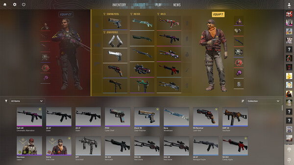
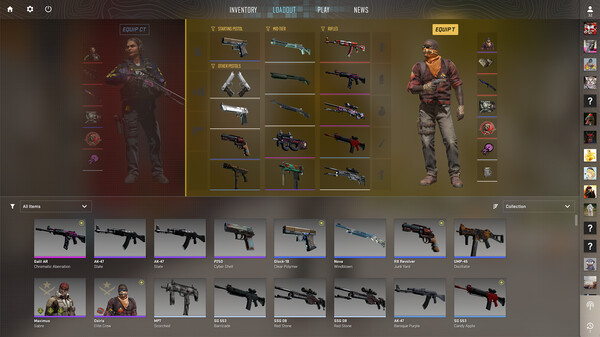

Counter-Strike Tarihçesi
Counter-Strike, ilk olarak 1999 yılında Minh Le ve Jess Cliffe tarafından bir Half-Life modu olarak geliştirildi. Kısa sürede popülerlik kazanarak Valve Corporation'ın dikkatini çekti ve 2000 yılında Valve tarafından resmi bir oyun olarak piyasaya sürüldü. Counter-Strike, oyunculara takım tabanlı stratejik oyun deneyimi sunarak e-spor dünyasının temel taşlarından biri haline geldi. Yıllar içinde Counter-Strike: Source ve Counter-Strike: Global Offensive gibi devam oyunlarıyla efsanesini sürdürdü. Şimdiyse en güncel oyunu olan Counter-Strike 2 ile oyuncularına hizmet vermeye devam ediyor.
Oyun İçi Resimler ve Oynanış
Counter-Strike, iki grubun (Teröristler ve Counter-Teröristler) karşı karşıya geldiği takım tabanlı bir FPS oyunudur. Oyundaki amaç, takımın görevini tamamlamak veya rakip takımı etkisiz hale getirmektir. Teröristler genellikle bomba kurma ya da rehine tutma görevlerini üstlenirken, Counter-Teröristler bombayı etkisiz hale getirmek veya rehineleri kurtarmaya çalışır. Her tur, oyuncuların bireysel becerileri ve takım stratejilerinin birleşimiyle sonuçlanır


 

Şampiyon Takımlar
| Turnuva | Şampiyon | Oyuncular | MVP |
|---|---|---|---|
| ELEAGUE Major: Boston 2018 | Cloud9 | tarik, Stewie2K, Skadoodle, autimatic, RUSH | Tarik "tarik" Çelik |
| FACEIT Major: London 2018 | Astralis | dev1ce, dupreeh, Xyp9x, gla1ve, Magisk | Nicolai "dev1ce" Reedtz |
| IEM Katowice Major 2019 | Astralis | dev1ce, dupreeh, Xyp9x, gla1ve, Magisk | Emil "Magisk" Reif |
| StarLadder Major: Berlin 2019 | Astralis | dev1ce, dupreeh, Xyp9x, gla1ve, Magisk | Nicolai "dev1ce" Reedtz |
| PGL Major Stockholm 2021 | Natus Vincere | s1mple, electronic, Boombl4, Perfecto, B1T | Oleksandr "s1mple" Kostyliev |
| PGL Major Antwerp 2022 | FaZe Clan | rain, karrigan, broky, ropz, Twistzz | Håvard "rain" Nygaard |
| IEM Rio Major 2022 | Outsiders (Virtus.pro) | Jame, FL1T, fame, Qikert, n0rb3r7 | Dzhami "Jame" Ali |
| BLAST.tv Paris Major 2023 | Team Vitality | ZywOo, apEX, Magisk, Spinx, dupreeh | Mathieu "ZywOo" Herbaut |
| Perfect World CS:GO Major 2024 | Team Spirit | magixx, Chopper, Patsi, s1ren, Wonderful | Boris "magixx" Vorobiev |